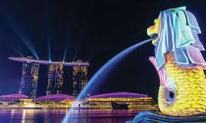
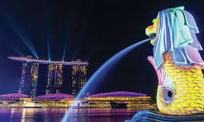
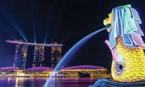

Singapore,officially the Republic of Singapore, is an island country and city-state in Southeast Asia. The country's territory comprises one main island, 63 satellite islands and islets, and one outlying islet. It is about one degree of latitude (137 kilometres or 85 miles) north of the equator, off the southern tip of the Malay Peninsula, bordering the Strait of Malacca to the west, the Singapore Strait to the south along with the Riau Islands in Indonesia, the South China Sea to the east, and the Straits of Johor along with the State of Johor in Malaysia to the north.
Its visionary, meritocratic government has leveraged long-term strategic planning to create one of the world’s most business‑friendly, digitally advanced economies—anchored by world-class financial institutions, Changi Airport, and the Port of Singapore—while its ultra-efficient urban design integrates verdant green spaces such as Gardens by the Bay into daily life, all underpinned by a social harmony nurtured through proactive housing, education, and multicultural policies.
By embedding sustainability at the heart of its urban fabric—showcased through innovative landmarks like Gardens by the Bay with its Supertrees, energy-efficient domes, rainwater harvesting systems, and solar-powered features—Singapore underscores that environmental stewardship and urban vibrancy are not mutually exclusive, while its robust social architecture, from ethnically integrated public housing and merit-based education to strengthened constitutional safeguards and multicultural engagement, ensures that progress remains inclusive and cohesive.

Singapore was originally known as Temasek in the 14th century and functioned as a small but significant trading post under regional powers such as the Srivijaya and Majapahit empires, benefiting from its strategic location along vital maritime trade routes. In 1819, Sir Stamford Raffles of the British East India Company established a British trading post on the island, turning it into a thriving free port that attracted merchants, migrants, and workers from China, India, the Malay Archipelago, and beyond, creating a culturally diverse population. During World War II, Singapore was invaded by Japanese forces in February 1942, marking the beginning of a harsh occupation during which it was renamed Syonan-to (“Light of the South”) and its people suffered from shortages, violence, and oppression until the Japanese surrender in 1945. After the war, Singapore returned to British colonial rule but political movements for self-determination gained momentum, leading to the achievement of self-government in 1959 under Prime Minister Lee Kuan Yew. In 1963, Singapore joined the Federation of Malaysia, but political and ethnic tensions soon led to its separation, and on 9 August 1965, Singapore became an independent republic. In the decades that followed, the government pursued rapid industrialisation, economic diversification, and social reforms, transforming Singapore from a developing port city into one of the world’s most prosperous, modern, and globally connected nations.
Singapore has a highly efficient and well-integrated transportation network that combines public transport, private vehicles, and active mobility options. The Mass Rapid Transit (MRT) system forms the backbone of public transport, with an extensive network of underground and elevated trains connecting most parts of the island quickly and affordably. Complementing the MRT are public buses, which cover routes that trains do not reach and are coordinated under a unified payment system using contactless cards and mobile apps. Taxis and ride-hailing services like Grab provide flexible door-to-door transport, though they are more expensive than trains and buses. For private car ownership, the government uses a Certificate of Entitlement (COE) system to control the number of vehicles and manage road congestion, supported by Electronic Road Pricing (ERP) charges during peak hours. Singapore also encourages cycling and walking through dedicated paths, park connectors, and bicycle-sharing schemes, while long-distance travel is facilitated by Changi Airport, one of the world’s busiest and most awarded airports, and the island’s international ferry and port services. This integrated system ensures that residents and visitors can travel around the city quickly, safely, and sustainably.
Singapore has a highly regarded education system known for its rigorous academic standards, bilingual policy, and emphasis on holistic development. Children typically begin with pre-school education at the age of four to six, followed by six years of primary school, where they study core subjects such as English, their designated Mother Tongue language (Chinese, Malay, or Tamil), Mathematics, and Science, alongside moral and physical education. After the Primary School Leaving Examination (PSLE), students move on to secondary education, which may follow the Express, Normal (Academic), or Normal (Technical) stream depending on their results, with a curriculum that prepares them for the GCE O-Level or N-Level examinations. Post-secondary pathways include junior colleges, polytechnics, the Institute of Technical Education (ITE), and other specialised institutions, allowing students to pursue academic, vocational, or technical training. Higher education is offered by world-class universities such as the National University of Singapore (NUS) and Nanyang Technological University (NTU), as well as specialised institutions like the Singapore University of Technology and Design (SUTD). The government also promotes lifelong learning through initiatives like SkillsFuture, encouraging citizens to continually upgrade their skills in a fast-changing economy. This combination of academic excellence, strong governance, and adaptability has made Singapore’s education system one of the most respected in the world.
Singapore has a highly efficient, accessible, and world-class healthcare system that combines strong public health infrastructure with regulated private services. The government operates a network of public hospitals and polyclinics that provide affordable medical care, while private hospitals and clinics offer additional options for those seeking shorter waiting times or specialised services. Healthcare financing is based on a unique "3M" framework—MediSave, a compulsory medical savings scheme; MediShield Life, a universal basic health insurance plan; and MediFund, a government endowment fund that helps needy citizens cover medical costs. This structure ensures that patients share responsibility for their healthcare expenses while keeping the system sustainable. Singapore is also known for its advanced medical technology, skilled professionals, and high clinical standards, attracting medical tourists from around the region. Public health campaigns promote healthy lifestyles, vaccinations, and preventive screenings to reduce the burden of disease. Overall, Singapore’s healthcare model balances quality, affordability, and sustainability, consistently ranking among the best in the world for outcomes and efficiency.
Singapore’s culture is a vibrant blend of Chinese, Malay, Indian, and Western influences, shaped by its history as a multicultural trading port. This diversity is reflected in its languages, with English serving as the main working language, while Mandarin, Malay, and Tamil are official languages that preserve cultural heritage. The nation’s food culture is world-famous, offering a mix of hawker centre favourites such as chicken rice, satay, laksa, and roti prata, alongside fine dining experiences. Festivals from different communities—such as Chinese New Year, Hari Raya Aidilfitri, Deepavali, and Christmas—are celebrated with equal enthusiasm, fostering mutual respect and understanding. Traditional arts like Chinese opera, Malay dance, and Indian classical music coexist with modern forms such as theatre, street art, and contemporary music. Singaporeans also value social harmony, which is reinforced through government policies like ethnic integration in public housing and bilingual education. The result is a uniquely harmonious and cosmopolitan society where different traditions are preserved, adapted, and celebrated together.
Singapore is a small island nation located in Southeast Asia, situated at the southern tip of the Malay Peninsula, about one degree north of the equator. It consists of one main island and about 64 smaller islands and islets, many of which are uninhabited or used for specific purposes such as recreation, industry, or military training. The country is bordered by the Strait of Malacca to the west, the Singapore Strait to the south, the South China Sea to the east, and the Straits of Johor to the north, which separate it from Malaysia. Despite its compact size—measuring roughly 50 kilometres east to west and 27 kilometres north to south—Singapore has a variety of landscapes, including urban cityscapes, coastal beaches, parks, and nature reserves like the Bukit Timah Nature Reserve. Its location along major shipping routes has made it one of the world’s busiest ports, while land reclamation projects have expanded its territory to support urban development, industry, and green spaces.